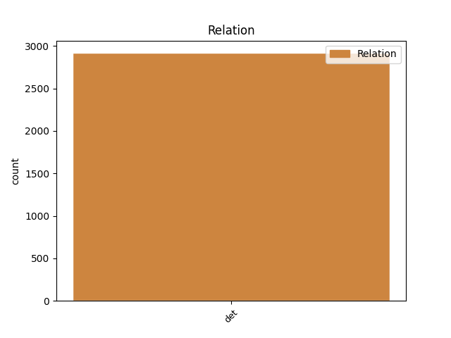
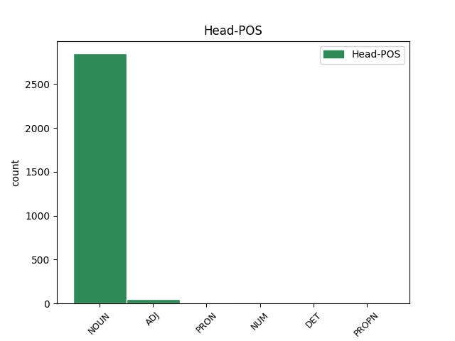
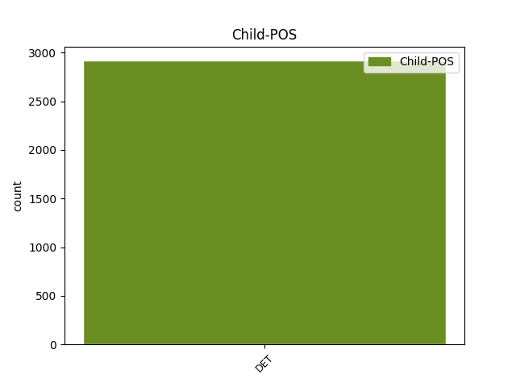

Distribution of features within this leaf



Agreement Rules sorted by frequency.
- When the dependent token is the determiner(det) of the head token, and the head token is NOUN and the dependent token is DET.
1 Dacă _ _ _ _ 0 _ _ _
2 V _ _ _ _ 0 _ _ _
3 este _ _ _ _ 0 _ _ _
4 aproape _ _ _ _ 0 _ _ _
5 de _ _ _ _ 0 _ _ _
6 zero _ _ _ _ 0 _ _ _
7 ( _ _ _ _ 0 _ _ _
8 V _ _ _ _ 0 _ _ _
9 < _ _ _ _ 0 _ _ _
10 35% _ _ _ _ 0 _ _ _
11 ) _ _ _ _ 0 _ _ _
12 , _ _ _ _ 0 _ _ _
13 atunci _ _ _ _ 0 _ _ _
14 populația _ _ _ _ 0 _ _ _
15 studiată _ _ _ _ 0 _ _ _
16 statistic _ _ _ _ 0 _ _ _
17 este _ _ _ _ 0 _ _ _
18 omogenă _ _ _ _ 0 _ _ _
19 și _ _ _ _ 0 _ _ _
20 media _ _ _ _ 0 _ _ _
21 m _ _ _ _ 0 _ _ _
22 este _ _ _ _ 0 _ _ _
23 reprezentativă _ _ _ _ 0 _ _ _
24 pentru _ _ _ _ 0 _ _ _
25 această acest DET Dd3fsr---e Case=Acc,Nom|Gender=Fem|Number=Sing|Person=3|Position=Prenom|PronType=Dem 26 det _ _
26 populație populație NOUN Ncfsrn Case=Acc,Nom|Definite=Ind|Gender=Fem|Number=Sing 0 _ _ _
27 . _ _ _ _ 0 _ _ _
1 Plaja _ _ _ _ 0 _ _ _
2 P _ _ _ _ 0 _ _ _
3 este _ _ _ _ 0 _ _ _
4 diferența _ _ _ _ 0 _ _ _
5 dintre _ _ _ _ 0 _ _ _
6 cea _ _ _ _ 0 _ _ _
7 mai _ _ _ _ 0 _ _ _
8 mare _ _ _ _ 0 _ _ _
9 ( _ _ _ _ 0 _ _ _
10 H _ _ _ _ 0 _ _ _
11 ) _ _ _ _ 0 _ _ _
12 și _ _ _ _ 0 _ _ _
13 cea cel DET Tdfsr Case=Acc,Nom|Gender=Fem|Number=Sing|PronType=Dem 15 det _ _
14 mai _ _ _ _ 0 _ _ _
15 mică mic ADJ Afpfsrn Case=Acc,Nom|Definite=Ind|Degree=Pos|Gender=Fem|Number=Sing 0 _ _ _
16 ( _ _ _ _ 0 _ _ _
17 L _ _ _ _ 0 _ _ _
18 ) _ _ _ _ 0 _ _ _
19 valoare _ _ _ _ 0 _ _ _
20 a _ _ _ _ 0 _ _ _
21 valorilor _ _ _ _ 0 _ _ _
22 xi _ _ _ _ 0 _ _ _
23 dintr- _ _ _ _ 0 _ _ _
24 un _ _ _ _ 0 _ _ _
25 set _ _ _ _ 0 _ _ _
26 de _ _ _ _ 0 _ _ _
27 date _ _ _ _ 0 _ _ _
28 . _ _ _ _ 0 _ _ _
1 De _ _ _ _ 0 _ _ _
2 cele cel DET Tdfpr Case=Acc,Nom|Gender=Fem|Number=Plur|PronType=Dem 4 det _ _
3 mai _ _ _ _ 0 _ _ _
4 multe mult PRON Pi3fpr Case=Acc,Nom|Gender=Fem|Number=Plur|Person=3|PronType=Ind 0 _ _ _
5 ori _ _ _ _ 0 _ _ _
6 obstacolul _ _ _ _ 0 _ _ _
7 este _ _ _ _ 0 _ _ _
8 unilateral _ _ _ _ 0 _ _ _
9 și _ _ _ _ 0 _ _ _
10 durerea _ _ _ _ 0 _ _ _
11 – _ _ _ _ 0 _ _ _
12 în _ _ _ _ 0 _ _ _
13 consecință _ _ _ _ 0 _ _ _
14 – _ _ _ _ 0 _ _ _
15 este _ _ _ _ 0 _ _ _
16 unilaterală _ _ _ _ 0 _ _ _
17 . _ _ _ _ 0 _ _ _
1 Quartila _ _ _ _ 0 _ _ _
2 Q3 _ _ _ _ 0 _ _ _
3 este _ _ _ _ 0 _ _ _
4 un _ _ _ _ 0 _ _ _
5 număr _ _ _ _ 0 _ _ _
6 cu _ _ _ _ 0 _ _ _
7 proprietatea _ _ _ _ 0 _ _ _
8 că _ _ _ _ 0 _ _ _
9 trei _ _ _ _ 0 _ _ _
10 pătrimi _ _ _ _ 0 _ _ _
11 din _ _ _ _ 0 _ _ _
12 date _ _ _ _ 0 _ _ _
13 au _ _ _ _ 0 _ _ _
14 valori _ _ _ _ 0 _ _ _
15 mai _ _ _ _ 0 _ _ _
16 mici _ _ _ _ 0 _ _ _
17 decât _ _ _ _ 0 _ _ _
18 Q3 _ _ _ _ 0 _ _ _
19 și _ _ _ _ 0 _ _ _
20 o un DET Tifsr Case=Acc,Nom|Gender=Fem|Number=Sing|PronType=Ind 21 det _ _
21 pătrime pătrime NUM Mffsrln Case=Acc,Nom|Definite=Ind|Gender=Fem|Number=Sing|NumForm=Word|NumType=Card 0 _ _ _
22 din _ _ _ _ 0 _ _ _
23 date _ _ _ _ 0 _ _ _
24 au _ _ _ _ 0 _ _ _
25 valori _ _ _ _ 0 _ _ _
26 mai _ _ _ _ 0 _ _ _
27 mari _ _ _ _ 0 _ _ _
28 decât _ _ _ _ 0 _ _ _
29 Q3 _ _ _ _ 0 _ _ _
30 . _ _ _ _ 0 _ _ _
1 Neamuri _ _ _ _ 0 _ _ _
2 mii _ _ _ _ 0 _ _ _
3 îi _ _ _ _ 0 _ _ _
4 cresc _ _ _ _ 0 _ _ _
5 sub _ _ _ _ 0 _ _ _
6 poale _ _ _ _ 0 _ _ _
7 , _ _ _ _ 0 _ _ _
8 Toate _ _ _ _ 0 _ _ _
9 înflorind _ _ _ _ 0 _ _ _
10 din _ _ _ _ 0 _ _ _
11 mila _ _ _ _ 0 _ _ _
12 Codrului _ _ _ _ 0 _ _ _
13 , _ _ _ _ 0 _ _ _
14 Măriei Măria PROPN Npfsoy Case=Dat,Gen|Definite=Def|Gender=Fem|Number=Sing 0 _ _ _
15 Sale său DET Ds3fsos Case=Dat,Gen|Gender=Fem|Number=Sing|Number[psor]=Sing|Person=3|Poss=Yes|PronType=Prs 14 det _ SpaceAfter=No
16 . _ _ _ _ 0 _ _ _
1 Nu _ _ _ _ 0 _ _ _
2 trecu _ _ _ _ 0 _ _ _
3 mult _ _ _ _ 0 _ _ _
4 și _ _ _ _ 0 _ _ _
5 suita _ _ _ _ 0 _ _ _
6 călătorilor _ _ _ _ 0 _ _ _
7 fu _ _ _ _ 0 _ _ _
8 încongiurată _ _ _ _ 0 _ _ _
9 de _ _ _ _ 0 _ _ _
10 vreo vreun DET Di3fsr---e Case=Acc,Nom|Gender=Fem|Number=Sing|Person=3|Position=Prenom|PronType=Ind 11 det _ _
11 câțiva câtva DET Di3mpr Case=Acc,Nom|Gender=Masc|Number=Plur|Person=3|PronType=Ind 0 _ _ _
12 flăcăi _ _ _ _ 0 _ _ _
13 scurți _ _ _ _ 0 _ _ _
14 de _ _ _ _ 0 _ _ _
15 stat _ _ _ _ 0 _ _ _
16 , _ _ _ _ 0 _ _ _
17 vânoși _ _ _ _ 0 _ _ _
18 și _ _ _ _ 0 _ _ _
19 înarmați _ _ _ _ 0 _ _ _
20 până _ _ _ _ 0 _ _ _
21 în _ _ _ _ 0 _ _ _
22 dinți _ _ _ _ 0 _ _ _
23 . _ _ _ _ 0 _ _ _
Disagree Examples:
1 Ea _ _ _ _ 0 _ _ _
2 o _ _ _ _ 0 _ _ _
3 ducea _ _ _ _ 0 _ _ _
4 pe _ _ _ _ 0 _ _ _
5 sora soră NOUN Ncfsry Case=Acc,Nom|Definite=Def|Gender=Fem|Number=Sing 0 _ _ _
6 lui lui DET Tf-so Case=Dat,Gen|Definite=Def|Number=Sing|PronType=Art 5 det _ _
7 mai _ _ _ _ 0 _ _ _
8 mică _ _ _ _ 0 _ _ _
9 - _ _ _ _ 0 _ _ _
10 sau _ _ _ _ 0 _ _ _
11 poate _ _ _ _ 0 _ _ _
12 nu _ _ _ _ 0 _ _ _
13 ducea _ _ _ _ 0 _ _ _
14 decât _ _ _ _ 0 _ _ _
15 o _ _ _ _ 0 _ _ _
16 legătură _ _ _ _ 0 _ _ _
17 de _ _ _ _ 0 _ _ _
18 pături _ _ _ _ 0 _ _ _
19 ; _ _ _ _ 0 _ _ _
20 nu _ _ _ _ 0 _ _ _
21 știa _ _ _ _ 0 _ _ _
22 sigur _ _ _ _ 0 _ _ _
23 dacă _ _ _ _ 0 _ _ _
24 sora _ _ _ _ 0 _ _ _
25 lui _ _ _ _ 0 _ _ _
26 se _ _ _ _ 0 _ _ _
27 născuse _ _ _ _ 0 _ _ _
28 deja _ _ _ _ 0 _ _ _
29 pe- _ _ _ _ 0 _ _ _
30 atunci _ _ _ _ 0 _ _ _
31 . _ _ _ _ 0 _ _ _
1 Ronald _ _ _ _ 0 _ _ _
2 Reagan _ _ _ _ 0 _ _ _
3 , _ _ _ _ 0 _ _ _
4 cel cel DET Tdmsr Case=Acc,Nom|Gender=Masc|Number=Sing|PronType=Dem 9 det _ _
5 de- _ _ _ _ 0 _ _ _
6 al _ _ _ _ 0 _ _ _
7 40 _ _ _ _ 0 _ _ _
8 -lea _ _ _ _ 0 _ _ _
9 președinte președintă NOUN Ncfson Case=Dat,Gen|Definite=Ind|Gender=Fem|Number=Sing 0 _ _ _
10 al _ _ _ _ 0 _ _ _
11 S.U.A. _ _ _ _ 0 _ _ _
12 , _ _ _ _ 0 _ _ _
13 s- _ _ _ _ 0 _ _ _
14 a _ _ _ _ 0 _ _ _
15 stins _ _ _ _ 0 _ _ _
16 din _ _ _ _ 0 _ _ _
17 viață _ _ _ _ 0 _ _ _
18 la _ _ _ _ 0 _ _ _
19 vârsta _ _ _ _ 0 _ _ _
20 de _ _ _ _ 0 _ _ _
21 93 _ _ _ _ 0 _ _ _
22 de _ _ _ _ 0 _ _ _
23 ani _ _ _ _ 0 _ _ _
24 , _ _ _ _ 0 _ _ _
25 la _ _ _ _ 0 _ _ _
26 Los _ _ _ _ 0 _ _ _
27 Angeles _ _ _ _ 0 _ _ _
28 . _ _ _ _ 0 _ _ _
1 Programul _ _ _ _ 0 _ _ _
2 Direcției _ _ _ _ 0 _ _ _
3 Regionale _ _ _ _ 0 _ _ _
4 de _ _ _ _ 0 _ _ _
5 Drumuri _ _ _ _ 0 _ _ _
6 și _ _ _ _ 0 _ _ _
7 Poduri _ _ _ _ 0 _ _ _
8 Timișoara _ _ _ _ 0 _ _ _
9 pentru _ _ _ _ 0 _ _ _
10 anul _ _ _ _ 0 _ _ _
11 2005 _ _ _ _ 0 _ _ _
12 include _ _ _ _ 0 _ _ _
13 lucrări _ _ _ _ 0 _ _ _
14 în _ _ _ _ 0 _ _ _
15 continuare _ _ _ _ 0 _ _ _
16 ( _ _ _ _ 0 _ _ _
17 care _ _ _ _ 0 _ _ _
18 au _ _ _ _ 0 _ _ _
19 demarat _ _ _ _ 0 _ _ _
20 în _ _ _ _ 0 _ _ _
21 anii _ _ _ _ 0 _ _ _
22 trecuți _ _ _ _ 0 _ _ _
23 ) _ _ _ _ 0 _ _ _
24 , _ _ _ _ 0 _ _ _
25 a _ _ _ _ 0 _ _ _
26 căror care DET Dw3-po---e Case=Dat,Gen|Number=Plur|Person=3|Position=Prenom|PronType=Int,Rel 27 det _ _
27 valoare valoare NOUN Ncfsrn Case=Acc,Nom|Definite=Ind|Gender=Fem|Number=Sing 0 _ _ _
28 se _ _ _ _ 0 _ _ _
29 ridică _ _ _ _ 0 _ _ _
30 la _ _ _ _ 0 _ _ _
31 11 _ _ _ _ 0 _ _ _
32 463 _ _ _ _ 0 _ _ _
33 miliarde _ _ _ _ 0 _ _ _
34 de _ _ _ _ 0 _ _ _
35 lei _ _ _ _ 0 _ _ _
36 . _ _ _ _ 0 _ _ _
1 Centrul _ _ _ _ 0 _ _ _
2 de _ _ _ _ 0 _ _ _
3 formare _ _ _ _ 0 _ _ _
4 și _ _ _ _ 0 _ _ _
5 perfecționare _ _ _ _ 0 _ _ _
6 profesională _ _ _ _ 0 _ _ _
7 din _ _ _ _ 0 _ _ _
8 cadrul _ _ _ _ 0 _ _ _
9 C.C.I.A.T. _ _ _ _ 0 _ _ _
10 organizează _ _ _ _ 0 _ _ _
11 un _ _ _ _ 0 _ _ _
12 curs _ _ _ _ 0 _ _ _
13 avizat _ _ _ _ 0 _ _ _
14 de _ _ _ _ 0 _ _ _
15 Consiliul _ _ _ _ 0 _ _ _
16 Național _ _ _ _ 0 _ _ _
17 de _ _ _ _ 0 _ _ _
18 Formare _ _ _ _ 0 _ _ _
19 Profesională _ _ _ _ 0 _ _ _
20 a _ _ _ _ 0 _ _ _
21 Adulților _ _ _ _ 0 _ _ _
22 intitulat _ _ _ _ 0 _ _ _
23 Inspector _ _ _ _ 0 _ _ _
24 de _ _ _ _ 0 _ _ _
25 resurse _ _ _ _ 0 _ _ _
26 umane _ _ _ _ 0 _ _ _
27 , _ _ _ _ 0 _ _ _
28 a _ _ _ _ 0 _ _ _
29 cărui care DET Dw3mso---e Case=Dat,Gen|Gender=Masc|Number=Sing|Person=3|Position=Prenom|PronType=Int,Rel 30 det _ _
30 durată durată NOUN Ncfsrn Case=Acc,Nom|Definite=Ind|Gender=Fem|Number=Sing 0 _ _ _
31 este _ _ _ _ 0 _ _ _
32 de _ _ _ _ 0 _ _ _
33 100 _ _ _ _ 0 _ _ _
34 de _ _ _ _ 0 _ _ _
35 ore _ _ _ _ 0 _ _ _
36 . _ _ _ _ 0 _ _ _
1 Vineri _ _ _ _ 0 _ _ _
2 , _ _ _ _ 0 _ _ _
3 31 _ _ _ _ 0 _ _ _
4 decembrie _ _ _ _ 0 _ _ _
5 , _ _ _ _ 0 _ _ _
6 de _ _ _ _ 0 _ _ _
7 la _ _ _ _ 0 _ _ _
8 ora _ _ _ _ 0 _ _ _
9 18 _ _ _ _ 0 _ _ _
10 , _ _ _ _ 0 _ _ _
11 în _ _ _ _ 0 _ _ _
12 Catedrala _ _ _ _ 0 _ _ _
13 romano-catolică _ _ _ _ 0 _ _ _
14 din _ _ _ _ 0 _ _ _
15 Piața _ _ _ _ 0 _ _ _
16 Unirii _ _ _ _ 0 _ _ _
17 vor _ _ _ _ 0 _ _ _
18 avea _ _ _ _ 0 _ _ _
19 loc _ _ _ _ 0 _ _ _
20 o _ _ _ _ 0 _ _ _
21 devoțiune _ _ _ _ 0 _ _ _
22 de _ _ _ _ 0 _ _ _
23 mulțumire _ _ _ _ 0 _ _ _
24 și _ _ _ _ 0 _ _ _
25 un un DET Timsr Case=Acc,Nom|Gender=Masc|Number=Sing|PronType=Ind 26 det _ _
26 Te tu PRON Pp2-sa--------w Case=Acc|Number=Sing|Person=2|PronType=Prs|Strength=Weak 0 _ _ _
27 Deum _ _ _ _ 0 _ _ _
28 , _ _ _ _ 0 _ _ _
29 celebrate _ _ _ _ 0 _ _ _
30 de _ _ _ _ 0 _ _ _
31 P.S. _ _ _ _ 0 _ _ _
32 Martin _ _ _ _ 0 _ _ _
33 Roos _ _ _ _ 0 _ _ _
34 , _ _ _ _ 0 _ _ _
35 episcopul _ _ _ _ 0 _ _ _
36 diecezan _ _ _ _ 0 _ _ _
37 . _ _ _ _ 0 _ _ _